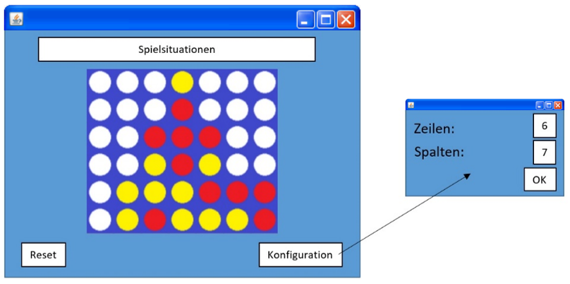

1. Projekt-Beschreibung
Dieses Projekt soll die Planung, Programmierung und Inbetriebnahme des Spiels "Vier gewinnt" beinhalten.
2. Features und Anforderungen
Was soll Ihre Anwendung leisten?
Implementierung des Spiels 4-Gewinnt für 2 Spieler über einen Server an 2 unterschiedlichen Endgeräten.
Erkennung von:
- illegalen Zügen (Spalte bereits voll)
- aktuellem Spielzustand (gewonnen oder verloren oder unentschieden oder Spiel geht weiter)
Bereitstellung einer grafischen Schnittstelle:
- Bedienen des Spiels (Zug machen, Spiel neu starten)
- Spielstand anzeigen und welcher Spieler am Zug ist
Konfigurationsmöglichkeit des Spiels
- Größe des Felds
Welche Dienste werden angeboten?
Anwendungsfälle:
- Zug setzen
- Spiel neu starten (Reset)
- Konfigurieren
Welche Eingangsdaten sind erforderlich? Zu welchen Ausgaben werden diese verarbeitet?
Eingangsdaten: Spieler wählt Spalte aus
Ausgabe: grafische Schnittstelle visualisiert den Spielzug und den neuen Spielstand
Wie soll sich das System in bestimmten Situationen verhalten?
Spielsituationen:
- gewonnen / verloren -> Spiel beendet + grafische Oberfläche verkündet den Gewinner (keine weiteren Züge möglich)
- unentschieden -> Spiel beendet (keine weiteren Züge möglich)
- ungültiger Spielzug -> Spiel signalisiert Ungültigkeit des Zuges (Ton); Spieler muss einen gültigen Zug setzen
- Konfiguration hat sich geändert -> Reset
Welche Daten sind dauerhaft zu speichern?
Belegung des Feldes, Spieler der den nächsten Zug macht
Wie soll die Bedieneroberfläche aussehen?

In welcher Systemumgebung soll Ihr Programm lauffähig sein?
Installierte Java 17 Runtime-Umgebung
Mit welchen Entwicklungswerkzeugen wird gearbeitet?
Als IDE: Eclipse for Java Developers
Programmiersprache: Java 17; (Swing-Bibliothek als UI)
3. Architektur
Für die Umsetzung werden zwei Klassen programmiert. Zum einen die Hauptklasse "Server", die das eigentliche Spiel in Standardausführung umfasst.
Zum anderen die Klasse "Client", die die Graphische Oberfläche enthält, die jeder Spieler auf seinem Endgerät sieht.
Die Klasse "Client" fragt ständig den Server nach Veränderungen am Spiel ab, die dann auf der graphischen Oberfläche des Client angezeigt werden.
Analog dazu fragt der Server je nach Spielreihenfolge den jeweiligen Client nach einem Spielzug ab.
4. Aufwandsschätzung und Aufteilung
- Erarbeitung einer Projektskizze
- Zeitaufwand: 3 Stunden
- Einteilung:
|
Projekt-Beschreibung |
Kevin Kenner |
|
Features und Anforderungen |
Fabian Eiternik, Leon Lafera |
|
Architektur |
Kevin Kenner, Marven Schwarz |
|
Aufwandsschätzung und Aufteilung |
Simon Fluck, Marius Mauth |
- Programmierung und Dokumentation
- Geschätzter Zeitaufwand: 30 Stunden
- Einteilung:
- Graphische Programmierung: Marius Mauth, Simon Fluck
- Serverprogrammierung: Kevin Kenner, Marven Schwarz
- Basisquelltext: Fabian Eiternik, Leon Lafera
- Projektvorstellung
- Geschätzter Zeitaufwand: Vorbereitung (5 Stunden), Vorstellung (12 min)
- Einteilung: Alle Gruppenmitglieder der Gruppe 13